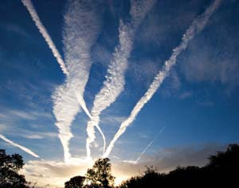
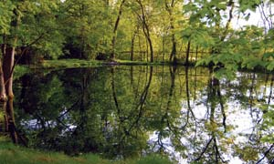

I have been a subscriber to Mother Earth News for many years and enjoy most of the articles. The article “Grandpa’s Hobbit House” (October/November 2006) is one of the best you have ever published. I just wish I lived close to this rare individual so I could visit him. This article more than made up for the article by Al Gore. He is a genuine piece of work and should fold up his tent, go quietly into the night and bother us no more.
Thanks for your excellent article on the importance of buying local food (“How to Find the Best Food,” August/September 2006). It was especially valuable that you offered simple, concrete ways that people can find local food and support local economies. One action that I didn’t see listed, however, was “Join Your Local Food Co-op.” Not only have food co-ops been pioneers in emphasizing local and organic food, but they also are dramatically different from supermarkets and natural-foods chains because they are community-based businesses controlled by their members. Today there are about 300 food co-ops across the country. To find one in your area, visit www.cooperativegrocer.coop/coops.
If there isn’t a food co-op in your community, start one! Many successful co-ops started when a few people who couldn’t find local, organic produce in grocery stores got together to start one themselves. Today, programs such as “Food Co-op 500” and organizations such as the Cooperative Fund of New England offer support to people who want to start co-ops in their communities. For more information, visit www.foodcoop500.coop and www.coopfund.coop.
Thanks, and keep up the great work!
In response to the “Reduce Air Travel” section within the excerpt of Al Gore’s An Inconvenient Truth in the October/November issue, I’d like to clarify that it’s not always better in terms of global warming to drive rather than fly. The relative impact of either depends on several key factors. The vehicle’s mpg, its EPA Air Pollution Score, the number of passengers, tire air pressure and the driver’s driving style all can affect the impact.
Much of an aircraft’s emissions are generated during takeoff and landing, so short-range flights have a higher CO2 output per passenger-mile than long-haul flights. Short-range aircraft also typically use less efficient engines and experience more drag because they fly at lower altitudes. Long-haul flights, such as the 3,100-mile trip across the United States, with average occupancy may be less carbon-intensive (958 pounds of CO2) than a single-occupant vehicle (1,390 pounds of CO2). So for long trips for one person, it’s better to fly than to drive. Avoid red-eye flights-there is new evidence that flying at night has a greater impact on global warming (see “Hot Trails” in the September 2006 Scientific American).
Whichever way you choose to travel, you can neutralize your emissions through third-party verified, legally accountable programs like those provided by our nonprofit organization DriveNeutral.
Scott died not long ago. Scott was my fish, and fish do die. I am upset when anything dies, but environmental problems killed Scott, and that disturbs me a lot. I had changed the water in his tank, and I guess I didn’t add enough chlorine remover. He died two days later. Seemingly minor changes in the environment caused his death. And that made me think about people.
We are changing our environment at an increasingly rapid pace. There is more and more proof that global warming is affecting our ice caps and glaciers, creating more devastating storms and making the oceans rise. More people have asthma than ever before. Cities routinely issue air-pollution warnings. Droughts are occurring in places they shouldn’t occur. There seems to be a lot more flooding. The heat wave last summer was a killer.
A lot of people already have gone the way of poor Scott, from Katrina and the heat wave. What can we do now to prevent this from happening? I don’t hear much about this from the leadership of our country-they’re more focused on where oil comes from than the damage it does to our environment.
Do you want your grandkids to end up like Scott?
An article about mulberries appeared in “Country Lore,” August/September 2006. The photo shows berries, but they’re not mulberries. Judging by the leaves shown in your photo, they look like blackberries. The berries are very similar to mulberries.
Whoops, we did indeed print a photograph of blackberries (the photographer had mislabeled it). Our apologies. - Mother
Thank you for your update on benzene in soft drinks (“Known Carcinogen Present in Soft Drinks Since 1990,” Green Gazette, June/July 2006). I was shocked to learn that benzoate preservatives and ascorbic acid (vitamin C) combined in these drinks produce benzene, which has been linked to anemia, chromosome aberrations, and nervous and immune system disorders-not to mention leukemia and other cancers of the blood. Please keep us updated on this issue!
I am working on an article for Mother Earth News titled “Organized Slime: The Great Septic Ripoff.” I’d like to hear from readers who have direct or indirect experience with requirements to install expensive septic systems, either as individuals or as a community. In my part of the world (Northern California), engineers have manipulated wastewater regulations so that conventional, tried-and-true gravity-powered septic systems are seldom approved, and high-tech, environmentally disruptive mound systems costing $30,000 to $50,000 are now the norm.
I am trying to determine just how widespread this practice is, and I am especially interested to hear about entire communities that have suddenly been hit with new, expensive onsite wastewater requirements.
My husband and I have been reading and subscribing to your magazine for a couple of years now, and it has been so inspiring. We’re building an addition onto our farmhouse. Because of your great articles, we will be giving up our fuel oil heat and hot water, adding solar panels to our roof and installing geothermal heating and air-conditioning for our entire home (with the pipes running out to the horse pasture). While we are not going off the grid, we feel it will at least help. Last month, our electric bill was a whopping $306, and fuel oil costs as much as $600 some months. I can’t wait to make comparisons next year. Thanks for the inspiring articles featured in your magazine and the guidance they have provided for our projects.
I enjoyed reading about the tomato-bug-eating dogs (“Country Lore,” June/July 2006) and thought I’d tell you about our natural pest exterminator. Every spring our mountain cabin is inundated with moths, and they drive me crazy. They hide during the day, but once the day darkens and the lights are turned on, they swirl madly against the windows and the lampshades. Now we have nature’s best weapon on our side! He’s fast, efficient and quiet, plus he’s tidy. He arrives every evening just after dusk and goes about his work. He leaves quietly sometime during the night. Since he’s such a steady visitor and somewhat friendly, we call him Casper.
Casper is a bat. He catches moths by the dozen in early spring and leaves a very neat little pile of moth wings on the top of a dresser below the rafter where he has chosen to dine. Our friends think we’re “batty” for letting Casper swoop around the ceilings. At first I was a little spooked, but I’m so grateful for his services that I’ve learned to relax while he works.
However, I have learned to sit a bit farther from the lamp while I read in the evenings. One night this spring a moth flew up toward the lampshade and zoom, right between me and the lamp, Casper flew by and picked up the moth. I think he was just showing off! This fall we plan to put in new windows, which will seal the cabin tighter. If we still have moth problems, I think we may have to install a bat door‚ so Casper can stay on the job.
After several years of watching my well tended, triple-disease-resistant tomatoes keel over, a call to the state agricultural center gave me a clue. Evidently, the roots of black walnut trees extend some distance and carry a toxin called “juglone,” which affects certain plants. It inspired me to pen this “augury” for your readers:
When tomatoes wilt do show,
And near black walnut they do grow,
It’s juglone toxin’s done this deed,
And lots of compost you will need.
Corn and peppers too take heed.
Cukes and rhubarb, too, will suffer;
Spuds and eggplant are no tougher;
Grapes, asparagus and cabbage-
Likewise, vulnerable herbage.
Berries, blue and black;
Rhododendrons and sweet lilac-
All will wilt near walnut black.
OK, we’ll stop. Reports indicate that some plants can survive, to varying degrees, the juglone produced by black walnut trees, including squash, melons, carrots, beans, beets, onions and parsnips. - Mother
The coal-mining practice of scooping the tops off of mountains and depositing the material in the valleys, known as mountaintop removal, must see the light of day outside of Appalachia. Through your efforts, and the resulting public outrage, we can and must put an end to this wanton destruction.
Today the well-financed proponents of coal are bombarding the media with ads depicting children praising energy independence, “clean-coal technology,” the availability of centuries’ worth of coal deposits, etc. But the practice of mountaintop removal is far too great a price to pay, and the public deserves to hear both sides of the issue.
“Moving Mountains,” an article by Erik Reece in the January/February 2006 issue of Orion magazine, is a graphic and detailed description of mountaintop removal and its consequences. - Mother
You might like to know that my old copies of Mother Earth News and the Archive CDs are in Mongolia with my son and daughter-in-law as they pursue a homestead-style living there. It’s the gift that keeps on giving.
They have gone to Mongolia to teach English and computer skills. They also will teach Bible classes to those who express an interest. The lifestyle in the “suburbs” is fairly rustic. They do have electricity most of the time, but they are using a sawdust composting toilet or an outhouse. They must carry water from their well (which has gone dry for the winter) for everything they do. They heat with wood and live in a log cabin, and the school where they work closes for the day when the temperature is less than 50 degrees below zero. They will plant a garden this year and can or freeze many of the foods they will eat during next winter.
I think it’s great to run articles on celebrities who do good for the environment, especially featuring them on the cover. When someone famous is on the cover, people will pick up your magazine, read it and discover all the trouble in the world and how that person is trying to make a difference. The Newmans and Robert Redford care about our Earth beyond the spotlight. Their popularity in show business prompts people to look up to them, and perhaps see the good they are trying to do. It may help draw more people into improving their lifestyles and helping the environment. That’s not why I started reading your magazine, but it may help others to start.
Do not do what I did! Do not clean up an existing pond during a drought. I thought cleaning out fallen trees, old cement and burnt lumber (as suggested in Mother’s April/May 2006 article, “Build a Pond”), and making my pond a few feet deeper would be a benign process. After dealing with three governmental agencies and paying for more than $3,000 worth of permits, a site plan, special wetland seed mix and a $500 inspection deposit, I learned that this does not apply to my locality in Illinois.
I’m happy to say the eight-month ordeal is over. At least I have my inspection deposit back and a great letter from the Stormwater Management Commission saying I went “above and over” what needed to be done on my “pond enhancement project.” My caution to anyone thinking of improving an existing pond: First, check the balance in your checking account and set up a meeting with your local authorities. But I, for one, will never again get involved in making a wetland wetter.
Author George DeVault says: It sounds like you may have inadvertently crossed a line between cleanup and reconstruction, or possibly your idea of “pond” and the law’s idea of “pond” were very different. An expensive lesson, but it sounds like you came out of it OK. Enjoy your reborn pond!
I’m writing to let Mother readers know of the passing of cordwood builder and pioneer Jack Henstridge. I think Jack contributed several articles to the magazine over the years. His teaching informed and inspired many of today’s best-known cordwood builders. His contributions are many and noteworthy, and his name was well respected in alternative building circles.
If you need more information, please go to www.daycreek.com and click the forum link for updates. It’s a sad loss for cordwood builders.
Starting with “We Built a $75,000 House … for Only $10,000!” in May/June 1977, Jack Henstridge was the author or the subject of numerous articles in our pages. Visit our online Archive to find these articles. He inspired many people, and he will be missed. - Mother
In response to “Declare Energy Independence” by Jim DiPeso (June/July 2006), I believe this is an opportune time to bring back the “victory garden” idea. Victory gardens, also called war gardens or food gardens for defense, were planted during the two World Wars to reduce the pressure on the food supply brought on by the war effort. These gardens provided both food and a civil morale booster.
Today, I’m speaking of a different kind of “victory garden.” We have a unique opportunity to start a non-partisan move to individual use of solar and wind power. Every average American is hurting from the gas and electricity prices that have doubled and tripled in a year.
To succeed, we need a set of renewable energy projects that most people can buy or build. Small, but productive enough that participants can look at their new energy bill and say, “Wow!” I’m interested for personal reasons as well. I live in the country and would like to build a simple windmill and put some solar panels on my roof. I just don’t know where to start.
You’ll find many articles about renewable energy projects in our online Archive, and we have several articles planned for 2007 about affordable DIY solar projects. We think this issue’s cover story is one of the best energy projects we’ve published. - Mother
In discussions of renewable energy, tax breaks and government subsidies are not the main question. Rather, it is: What are we, the people, doing to make renewables a reality? If we sit and wait for the government to act on renewable energy, it will never happen: Our government is too ponderous to be effectual, and it never seems to consider the simple long-term solutions.
We, the people, should resolve the problem by looking to each other. A few basic principles could guide a new grassroots project in renewable energy: Government should be left out as much as possible, being used only to break down the walls put up by big business. Our own resources and innovations should fund renewable energy programs. Renewable energy solutions should be low-tech and extremely Earth-friendly, using sources passed over by government and big business.
Wind energy is the most easily harnessed alternative energy source; thus, it should be our primary focus. Renewable energy programs should target on-peak production to yield the highest earnings-this is not greed, it’s simply smart business.
The energy industry would like you to think that the only solutions are high-tech solutions. Don’t believe it. The best solution is investment in a grass-roots, cooperative, Earth-friendly power company.
Seeing the new flex-fuel vehicles always makes me ask, “Why E85? Can’t these things run on 100 percent ethanol?” Is this combination of 85 percent ethanol and 15 percent gas just another way for Big Oil to ensure a presence in this new market, or does flex-fuel technology really require a small percentage of petrol? Side note: Have you ever seen conversion kits to modify an existing engine to burn this cleaner fuel?
Indy Racing League drivers recently have tested a Honda V8 that burns E100, reporting no problems, and the league plans to adopt it for all cars next year. But that’s high-speed racing. Regarding everyday uses, the Union of Concerned Scientists says, “Current flexible-fuel engines require at least 15 percent gasoline to ensure they can start at low temperatures (ethanol does not evaporate well in the cold), but future engine/fuel systems may be able to work with at least E90 and possibly E100. Give the engineers time. As for conversions, the EPA would have to certify conversion kits as there is the potential for serious air-quality problems if the conversion is done poorly. Also, a conversion is likely to be more expensive than if flex-fuel capability is included when the vehicle is built.”- Mother
Someone once said federal farm bills should be called food bills, because they affect all Americans, not just farmers. The present farm bill expires in 2007, so talk has already begun on where to go from here. Fundamental change is needed.
We need to loosen the corporate grip on agriculture and revamp the government’s role. The present system has forced many farmers out of farming, ravaged the free market in food, encouraged an environmentally destructive agriculture and promoted cheap calories that feed our obesity epidemic.
The next farm bill should promote a freer, more local market in agriculture, sustainable, soil-saving farming and a safer supply of more healthful food. And we should not forget the need to ensure a nutritional safety net for millions of low-income Americans. Let’s get our priorities straight. Here is a shopping list for the next farm bill:
Every U.S. senator and representative will have a vote on the next farm bill, which will affect your land, your water, your community, your supermarket and the food on your plate. If this matters to you, give them an earful.
Paul D. Johnson is a northeast Kansas organic market gardener and a family-farm legislative advocate for several churches in Kansas. He wrote this for the Land Institute’s Prairie Writers Circle, Salina, Kan.
|
 ISTOCK Jet contrails reflect heat back toward Earth, especially at night. |
GENERAL MOTORS Most flexible-fuel vehicles require at least 15 percent gasoline to ensure they can start at low temperatures. |
PRAIRIE WRITERS CIRCLE Paul Johnson is a northeast Kansas organic market gardener and a family-farm legislative advocate for several churches in Kansas. |
|
 RICK LAWRENCE Rick Lawrence’s pond in Wadsworth, Ill. |
|
|